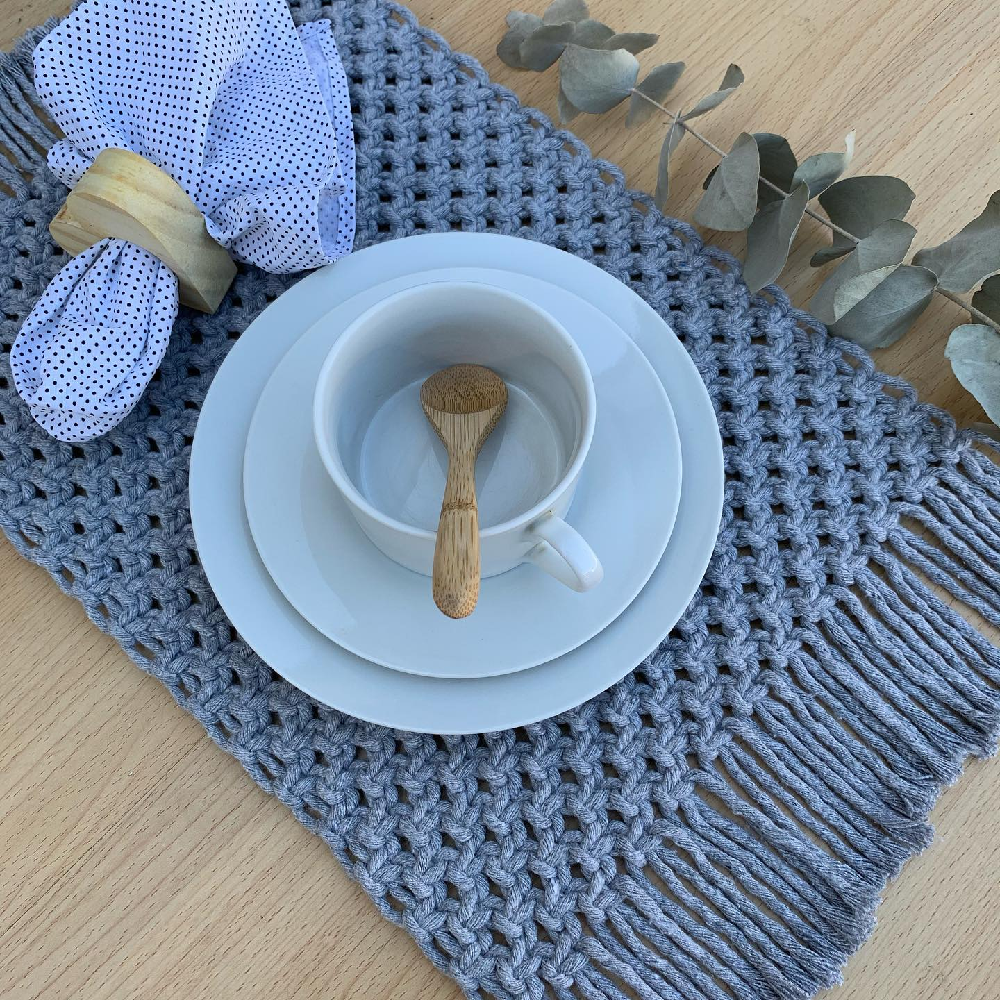
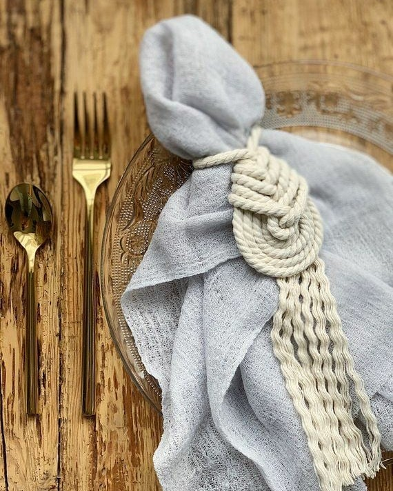
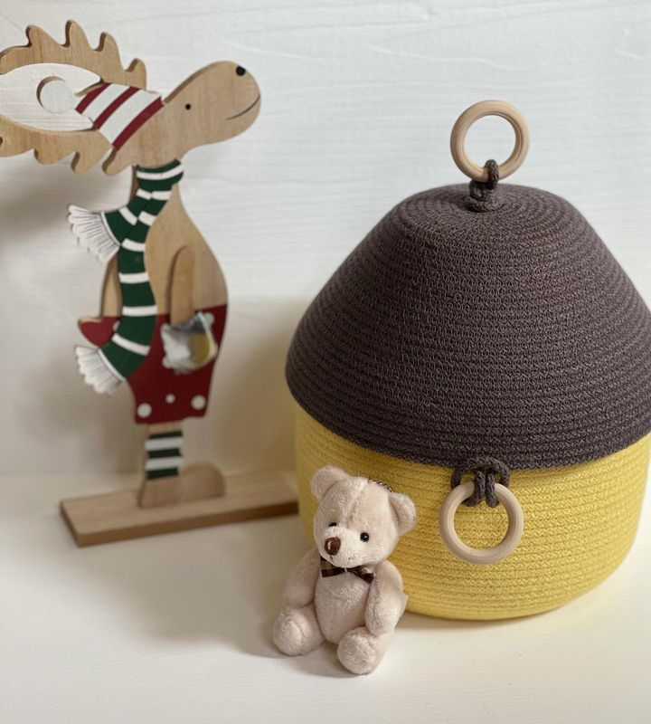

Все самое грандиозное и значительное складывается из мелочей. Так и в дизайне интерьера: чтобы помещение стало
уютным и необычным, необходимо добавить в него интересные детали.

Предметы декора — неотъемлемая составляющая дома в любом стиле интерьера: от классики до модерна. Они могут быть
дорогими или не очень, абстрактными или с конкретным замыслом, функциональными или чисто декоративными. Так и
или иначе, красивые предметы декора интерьера — это то, на чем хочется остановить взгляд, это элементы,
дополняющие и освежающие окружающую обстановку. Тем более, что в отличие от глобальной переделки и капитального
ремонта, вам не придется тратить крупные суммы и терять время.

Если вы хотите создать особое настроение в доме, вдохнуть в его атмосферу новую жизнь, не бойтесь
экспериментировать — выбирайте самые смелые, интересные и действительно эксклюзивные предметы интерьера.
Такие вещи никогда не выйдут из моды, всегда будут удивлять гостей и, возможно, станут вашей семейной реликвией.

Вы спросите, где же купить подобные элементы декора недорого?
Ответ прост: в интернет-магазине Handmade Design Natali.
У нас вы найдете по-настоящему стильные изделия для украшения любого помещения – гостиной, спальни,
кабинета или кухни.
Наш ассортимент товаров
Шкатулки для украшений.
Кашпо
Вазочки для цветов
Сервировочные салфетки
Корзины для белья и игрушек
Тарелочки для сладостей
Коробочки для мелочей
Подарочные коробочки
Эксклюзивные панно на стену
Весь ассортимент наших изделий которые вы можете также посмотреть и заказать перейдя по ссылке ниже в нашем магазине нажав на зелёную кнопочку.